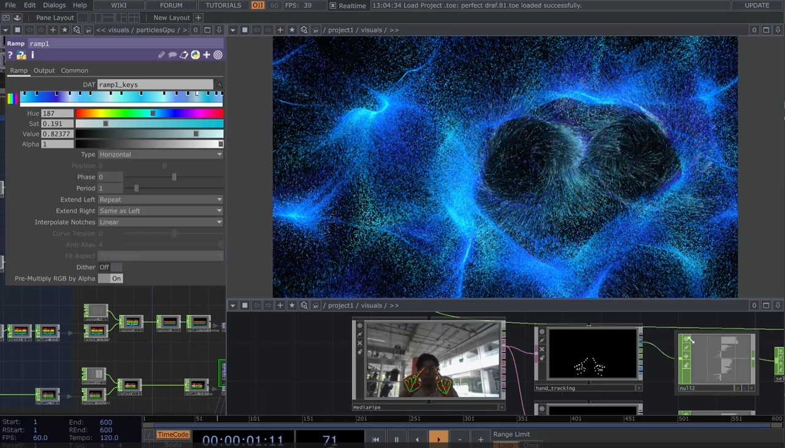
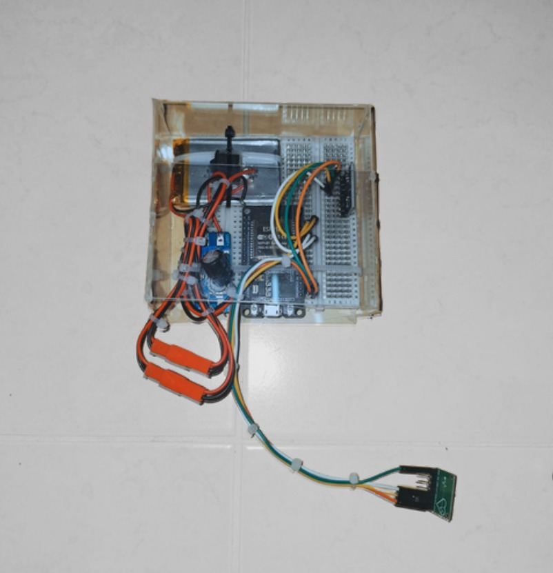
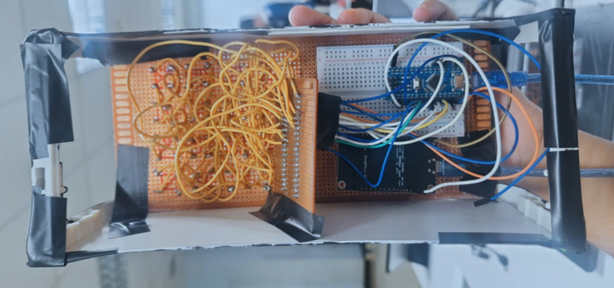

Project
← กลับหน้าหลัก
Interactive Projects

Interactiv Media
Interactive Art แนวคิด ทะเลยามคำคืน รายวิชา MDT 104 Creative Design ใช้ Handtracking ร่วมกับ Interactive Art ควบคุม graphic และ visual effect ด้วยมือของผู้ใช้งาน โดยใช้ Touchdesigner, Python และ Mediapipe
Touchdesigner
Python
Mediapipe


Biosensors Hardware
Haardware & Software Project รายวิชา MMI 220 biomechanics and biosensors ตอบสนองด้วยหลอดไฟ LED ตามจังหวะการแกว่งแขน หากแกว่งองศาถูกต้องไฟจะแสดงรูปแบบที่กำหนดว่าถูกต้องไว้ หากไม่จะมีไฟที่แสดงรูปแบบว่าไม่ถูกต้อง
Esp32
Arduino
Python
Sensors